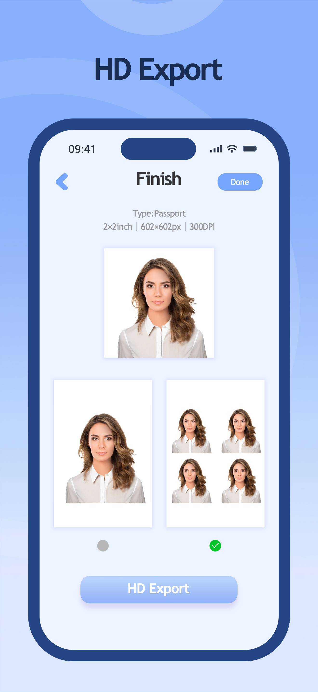

Dentist Games for Kids
Help little ones learn healthy habits through play!
Dentist Games for Kids is an educational role-playing experience designed for children aged 3–8. By simulating a real dental clinic, children help adorable animal friends solve their dental problems while exploring dental tools and a pretend clinic.
Key Features
- Educational Roleplay: Children learn about oral hygiene and dental tools in a fun, stress-free environment.
- Three Animal Patients: Treat the Crocodile, the Rabbit, and the Hippo, each with unique dental needs.
- Interactive Tools: Use the X-ray machine, dental drill, toothbrush, and more through intuitive touch-and-drag controls.
- Stunning Animations: Smooth, high-quality zooming effects make the clinic feel alive and engaging.
Platforms, unlocks and offline play
- iOS: free to download, with no third-party ads. A one-time in-app purchase unlocks the crocodile.
- Android: free to download with no in-app purchases. Unlock the crocodile by watching a rewarded ad with an internet connection.
- Offline play: the rabbit and hippo are available offline. The crocodile can be played offline after the unlock for your platform.
Clean and fill the rabbit's teeth, fit braces for the hippo, and try tooth extraction with the crocodile. Parents can share a role-play session with children at home or on a trip. The game does not provide medical diagnosis or treatment advice.
View on the App Store · View on Google Play
Store publishers: 泽沛 许 on iOS and Malt Creative on Google Play. Read the iOS privacy policy or the Android privacy policy for platform-specific information.
How to Play
- Select a Patient: Choose an animal friend from the waiting room.
- Diagnose: Use the X-ray machine to find hidden dental issues.
- Treat: Brush away bacteria, clean cavities, or apply braces to fix their smiles.
- Finish: Watch the animal's happy reaction once their teeth are healthy again!
Screenshots:




Support & Feedback
If you have any questions, suggestions, or need assistance, please feel free to contact us:
- Email: xiaomei.eazyidphoto@gmail.com
- Privacy Policy: See our privacy policy